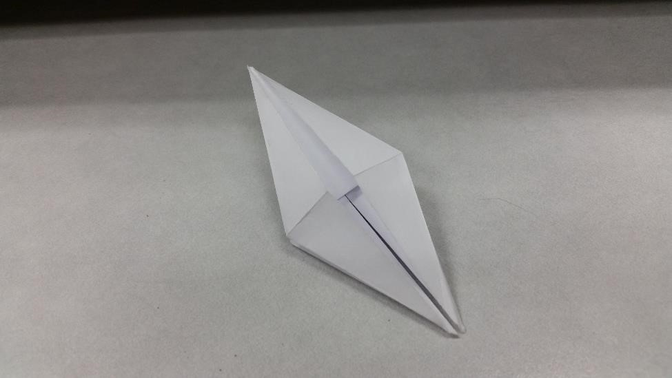
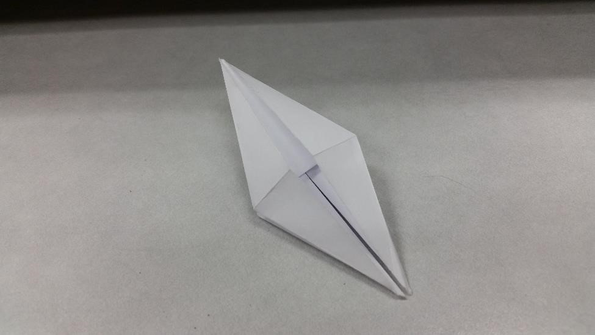

The Origami Crane
This is the classic crane. This is a traditional model that is quintessental of origami.
Learn how to make it below!
Step One: First Folds
Starting with a bird base, fold the bottom folded edges to the center.
This is the classic crane. This is a traditional model that is quintessental of origami.
Learn how to make it below!
Starting with a bird base, fold the bottom folded edges to the center.
